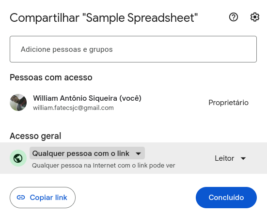
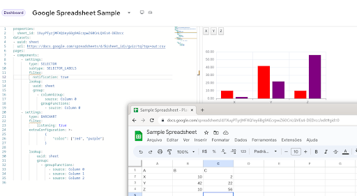

Using Dashbuilder with Google Spreadsheets
Dashbuilder can read from JSON and CSV contents. The only requirement is to make the file accessible to the machine where Dashbuilder is running. The issues you may face are:
- CORS errors: To solve CORS issue you need to use a web proxy to access the service or correctly configure CORS headers;
- Authentication: To solve this you can have a backend with authentication setup or include headers in the dataset declaration
- uuid: my_dataset
url: http://acme.org/myfile.csv
headers:
Authorization: Bearer {token}For Google spreadsheets we don’t have to worry about CORS or authentication as long as the document is published on the internet.
Steps to read a Google Spreadsheet from Dashbuilder
- Publish the document on the internet: The document must be public on the internet, so make it sure that you publish it with the option Anyone with the link. Here’s how it looks like in Portuguese:

- Now you need the sheet ID. It is what will allow us to get the same sheet output in CSV format. In our example here’s the ID:
https://docs.google.com/spreadsheets/d/1XuyPTyrjMFXQ1ey6Bg9AEcrpwZ60CnLQVEs4-DEDrcc
- Use the ID on this URL template. You can also specify a sheet name if you want
https://docs.google.com/spreadsheets/d/${sheet_id}/gviz/tq?tqx=out:csv&sheet=${sheet_name}
In our example here’s the final URL:
https://docs.google.com/spreadsheets/d/1XuyPTyrjMFXQ1ey6Bg9AEcrpwZ60CnLQVEs4-DEDrcc/gviz/tq?tqx=out:csv
- Now you can use the sheet from Dashbuilder. Just remember that for CSVs the first row is skipped. Here’s a sample dashboard which you can use to get started:
properties:
sheet_id: 1XuyPTyrjMFXQ1ey6Bg9AEcrpwZ60CnLQVEs4-DEDrcc
datasets:
- uuid: sheet
url: https://docs.google.com/spreadsheets/d/${sheet_id}/gviz/tq?tqx=out:csv
pages:
- components:
- settings:
type: BARCHART
lookup:
uuid: sheet
You can edit this same example using our online editor.
Conclusion
Dashbuilder can easily integrate with Google Spreadsheet and other documents available on the internet. Stay tuned for more Dashbuilder tutorials and articles!